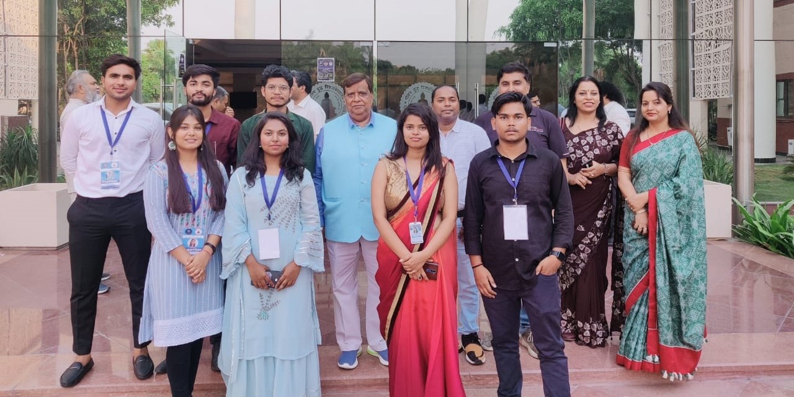

National Technology Day Sponsored by Driffle is celebrated on May 11th every year to commemorate the successful testing of the Shakti-I nuclear missile at the Indian Army's Pokhran Test Range in Rajasthan on May 11th, 1998. It encourages and inspires young people to pursue careers in science, technology, engineering, and mathematics (STEM) fields. Hon'ble Vice Chancellor Prof. Ravindra Kumar Sinha addressed the gathering, emphasizing the need for students to embrace technology and stay abreast of the latest advancements in their respective fields. He urged them to take advantage of technology's many opportunities and use it to drive positive change in society. The ceremony was graced by Dr. Vinod Karar, Chief Scientist at CSIR-CRRI and Professor at the Academy of Scientific and Innovative Research, who served as the Chief Guest for the event. Dr. Karar delivered an inspiring speech to the students, faculty members, and staff, in which he discussed the latest developments in the field of technology. He spoke about the growing significance of augmented, virtual, and mixed reality in various industries and how these technologies transform how we work and live. He also discussed the importance of aircraft display systems, airfield and naval ship lighting, and visual landing and navigation aids for naval and general aviation. Prof. Sanjay K. Sharma - Dean School of ICT, in his speech, touched upon the School's commitment to excellence in education, research, and diversity is a testament to its importance as a hub of technological innovation and talent Afterward, Dr. Mangey Ram Nagar, a successful Alumni of the University, currently Research Faculty in the Nano Organic and Photonics Lab, at NTHU Taiwan, shared his journey from being a student at GBU to a successful career in Taiwan in Technological Research. The other Keynote Speaker was Mr. Gaurav Jha - Co-founder & CTO Driffle (a 2020 pass-out student from GBU) motivated the crowd by sharing his personal experience in starting a Startup and problem-tacking strategies in its upscaling process. The next talk was from Mr. Vivek Singh, CEO (Ex-Student), who spoke about the requirement of commitment and dedication to make it big in the technical field. Followed by technical events, the TRX Dance Club and Music Club of the Unversity captivated the gathering with their mesmerizing performances. Finally, awards and prizes were given to the university alums and students who have made significant contributions to the field of technology, won different technical competitions, or contributed to organizing such events. The event was attended by a large number of students, faculty members, and staff from various departments of the university. Overall, the National Technology Day event at Gautam Buddha University was a huge success. It provided an excellent platform for students and faculty members to learn about the latest developments in the field of technology. The university looks forward to organizing similar events in the future to promote the use of technology for social good and inspire the next generation of innovators. The event organizers were the School of ICT, Institution Innovation cell( IIC) and the Techno Cultural Club.
The BIT Challenge is a technical competition that focuses on problem-solving and innovation in various domains, such as artificial intelligence, machine learning, cybersecurity, and blockchain. Participants can compete individually or in teams, and the winners can receive cash prizes or other rewards.
The BGMI Tournament is a gaming event that can attract a large audience and can be played on various platforms, such as mobile, PC, or console. The tournament can be structured as an elimination round or a league format, and the winners can receive cash prizes or other gaming-related rewards.
The BGMI Tournament is a gaming event that can attract a large audience and can be played on various platforms, such as mobile, PC, or console. The tournament can be structured as an elimination round or a league format, and the winners can receive cash prizes or other gaming-related rewards.
Code Crafters is an event that focuses on software development and coding. Participants can compete individually or in teams and can be given various challenges to develop software applications, websites, or other technological solutions. The winners can receive cash prizes or other rewards and can also have an opportunity to showcase their projects to potential employers or investors.
The event will include a Technical Talk by the Lead Coordinator of Techno Cultural Club and Alumni, followed by the recognition of all the Winners of various Technical Events organized by Techno Cultural Club and Core Team Members of Techno Cultural Club. We will conclude our event with an Entertainment Night.
GBU's Techno Cultural Club is a remarkable community of talented individuals. Proud to be the faculty coordinator of such a phenomenal team.
ConnectA remarkable community of talented individuals, creating waves of innovation and creativity. Proud to be the faculty coordinator, witnessing the phenomenal team's achievements and growth.
ConnectTechno Cultural Club is a remarkable community of talented individuals, where creativity and innovation thrive. Proud to be the faculty coordinator of this dedicated team.
ConnectI am honored to serve as the General Secretary of TCC. Together, let's foster a vibrant blend of technology and culture through exciting events and initiatives.
ConnectHello, I am Nikhil Mishra, the Secretary of TCC. I am committed to promoting technology and culture through engaging events and initiatives.
ConnectOrganizing Technology Day Celebrations by TCC was an exciting event to explore and connect through the innovation wonders. I had been witnessed a great opportunity where I learn my potentials and gain knowledge about the facts of modern technologies to become a successful person in life. Very thankful to be a part of this memorable event.
ConnectAs the organizer of the National Technology event at our university, I witnessed an incredible showcase of innovation, collaboration, and inspiration. It was a remarkable experience that ignited passion and opened doors to endless possibilities in the world of technology.
ConnectThe techno cultural club provided us with an amazing working experience during the Technology Day celebration. Their professionalism, teamwork, and dedication made it a memorable event
ConnectHello, I am Riddhi, I really had a wonderful experiencein organizing technology day celebration. The team spirit and potential of each individual made the event successful
ConnectOrganizing the event was a rollercoaster ride, filled with demands and challenges, but I maintained my composure and patience, ensuring tasks were executed with finesse. The exceptional team, overflowing with dedication, coupled with the guidance of experienced seniors, not only helped me unlock my potential but also fostered tremendous personal growth. Together, we created a truly fabulous event.
ConnectOrganizing Technology Day Celebrations by TCC was an exciting adventure, bringing together tech enthusiasts to explore and connect through the wonders of technology. It was a remarkable experience filled with collaboration and innovation
ConnectHad an amazing experience of being an Organizer of one of the most successful event of technology day celebration.
Connect